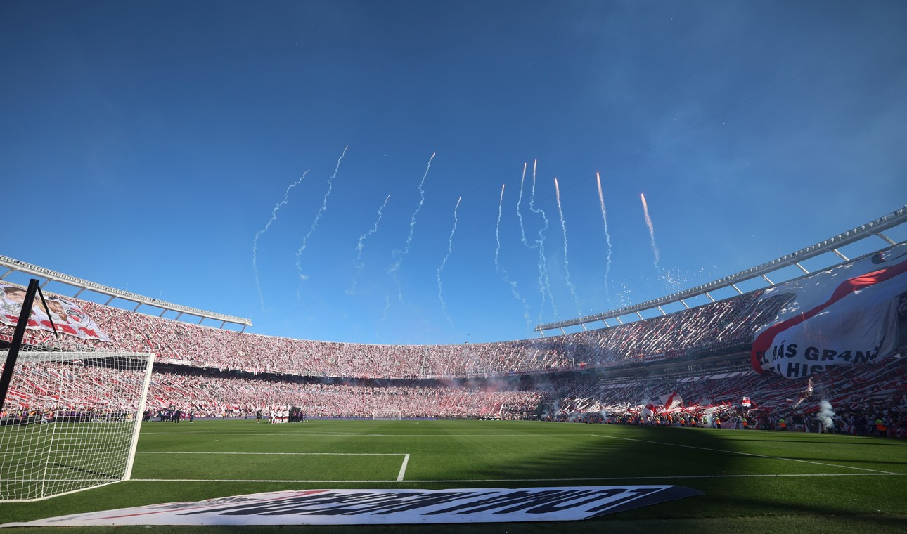
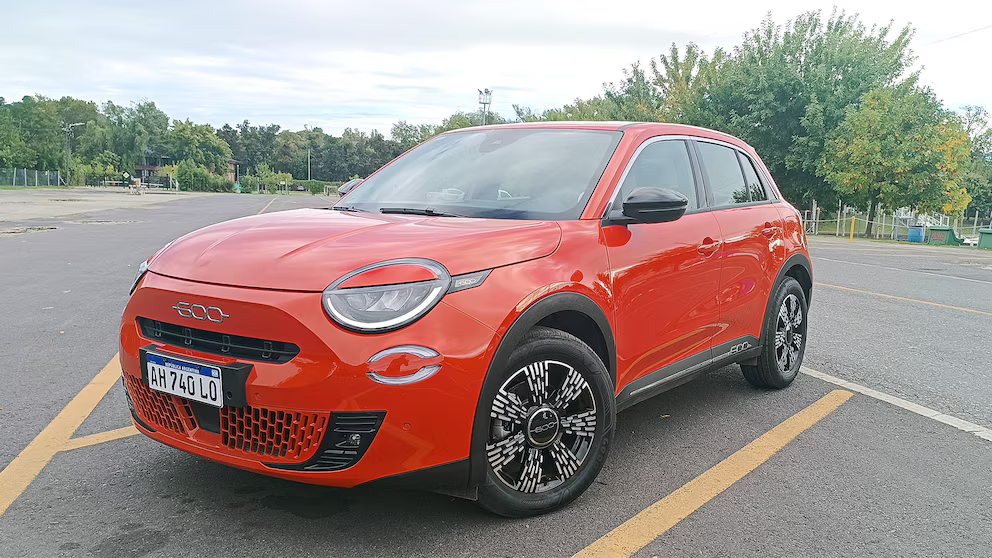

Con la llegada de Eduardo Coudet, el cambio de aire busca alcanzar a las tribunas del Monumental. El Chacho, en su estreno en casa, comenzó a descomprimir ese clima tenso que marcó el final del ciclo Gallardo, con silbidos y reprobación, y qué mejor que la fiesta de un superclásico para volver a unir a los hinchas con el plantel. En ese contexto, el choque más esperado del año ya empezó a jugarse en Núñez, donde continúan preparando lo que será un recibimiento diferente al de los últimos River- Boca, esta vez en versión mega y en modo retro porque se espera que incluya la vuelta de los famosos papelitos.
La Finalissimaque no fue dejó mucha tela para cortar. Los cruces entre UEFA, Conmebol, AFA y Real Federación Española aumentaron la polémica sobre el encuentro que terminó suspendiéndose ante la imposibilidad de fijar una nueva fecha y sede. Así, varias voces se refirieron al tema y Enzo Fernández, en tono de broma, chicaneó a Marc Cucurella, compañero suyo en el Chelsea, con que "tenía miedo" de jugar aquel encuentro. Ahora, llegó la respuesta del lateral.

Cuando en 2021 se planteó que la Unión Europea prohibiría desde 2035 la fabricación y venta de vehículos propulsados por motores de combustión interna alimentados por combustibles derivados del petróleo, la carrera por bajar los costos de fabricación de los autos eléctricos comenzó a ser la principal meta de todas las compañías automotrices.